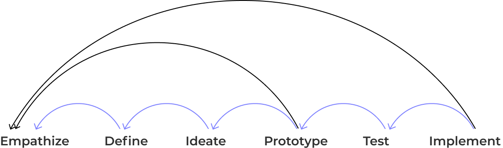

REMOTE EDUCATION
UX/UI CASE STUDY
OCT 2020
THE PROBLEM
Original School Website
Remote learning has diminished the supportive physical school environment previously provided to students causing parents to become homeschool teachers causing immense stress for both parents and students.
In additional, student are also constrained in their physical, social, and developmental needs.
THE SOLUTION
Redesigned School Website
In order to emulate a supportive physical school environment and provide parents some relief, implementing a learning hub will provide additional resources for both parents and students with lesson videos and direct messaging capabilities.
Also in incorporating daily challenges motivated by social sharing, students are provided an outlet for social, physical, and creative needs.
TEAM
Bonnie
Ward
Omar
Rehman
Samantha
Yee
Brian
Kim
TOOLS


MY ROLE
I took the role of Project Manager on the team. To keep us on track and assign work, the Gnatt Chart was used. I reviewed every part of the design process, created a new school logo, and was the primary Frontend Developer.
TIMELINE
2 week design sprint
